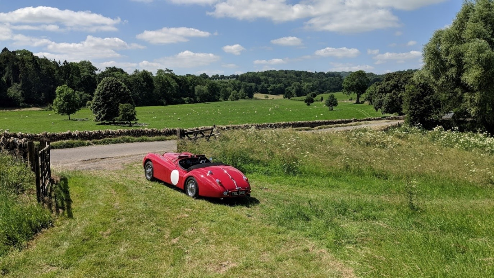

Le Tour Panoramique 2019
Sunday 1st September
· 26th August 2019
The second “Le Tour Panoramique” will be on Sunday 1st September.
A leisurely “tour” around the Cotswolds for classic cars. The start is at Prescott from 9 AM, where you can see cars attending the Breakfast Club and enjoy a classic breakfast in the clubhouse.
The Bugatti Trust will be opened specifically for tour participants from 9:30 – 11 AM, where the Bugatti Type 59 race car that last appeared at Prescott 80 years ago in the hands of Jean Bugatti and Jean-Pierre Wimille is on display.
There will be time to stop and enjoy the scenery or sights en-route, including Hidcote and Kiftsgate gardens, Broadway Tower, Snowshill, Chipping Campden, etc. The finish will be at the Gloucester Warwickshire Steam Railway in Toddington, where an inclusive Cream Tea will be served from 3 PM at the Flag and Whistle café. There you can join an inclusive tour of the steam sheds as part of a small group.
Wearing clothing that is period to the car is encouraged and there will be prizes for the best-dressed team and a fun concours and quiz that everyone can take part in.
Tickets per car and driver are £35, additional participants are £25. This includes Bugatti Trust entry, cream tea, steam shed tour, rally plate and route plan. Please contact the club office for details. The number of cars is strictly limited.
For further information please contact friends@bugatti.co.uk, or contact the club office on 01242 673136.
